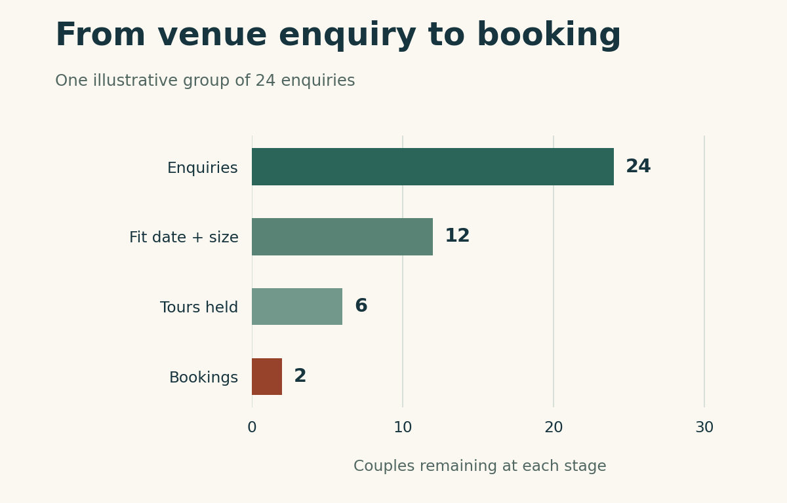

Published by ReviewRemoval. Authorship, sources and correction standards.
On this page
A couple finds two spaces with the right capacity and starts narrowing down dates. A Google review says your venue kept a deposit or ran out of food. The booking may involve your staff, a vendor you hired, or an independent vendor the couple selected. ReviewRemoval can assess a suspected policy violation once you’ve worked out whose service the review describes.
Request a free venue review assessment
Work out who supplied the service
Check the venue, event date, package and provider named in the review. A complaint about catering can be relevant when the venue arranged the meal. If the review explicitly describes a different venue or an independent vendor’s work on a separate event, record the specific mismatch and keep any public source that supports it. A mismatch is a better starting point than the fact that your team disagrees with the review. Google’s Maps review policies.
A genuine deposit or cancellation dispute belongs in your booking process. Revisit the written agreement and who handled the cancellation. Canada’s Office of Consumer Affairs encourages consumers to check what happens to a deposit before signing. Clear booking and deposit information helps the next couple know what to expect. Consumer guidance on contracts and deposits.
Find where prospective couples drop off
Measure Google-sourced enquiries by the requested wedding date and approximate guest count. Then count which are a fit, which tour, and which book. Follow the same group across each stage. The pattern is more informative than comparing Google clicks with deposits that were paid months later.

View chart data
| Stage | Couples |
|---|---|
| Enquiries | 24 |
| Fit date + size | 12 |
| Tours held | 6 |
| Bookings | 2 |
If early enquiries fall, check what your profile says about capacity, availability and the next step. If tours happen and bookings fall, look at price, included services and timing as well as reviews. The chart is a way to diagnose where to look.
Write down what you can substantiate
Preserve the review link and the wording about the venue, location or service it describes. Keep event contracts, attendee names, photos and payment details private. If there is a demand for money in exchange for the review disappearing, retain the message and relevant links. Google has a separate process for those demands. Google’s extortion reporting guidance.
Get a second look before you report
Send the public link and the most useful fact about the other event or vendor. ReviewRemoval can help determine which cases have a policy basis, prepare the report for approved work and handle agreed follow-up. Screen a review for a possible violation · Prepare the facts for reporting.
For approved work, ReviewRemoval charges CAD $50 upfront per review and CAD $125 per successful removal, before applicable taxes. See what the fees cover.
Need help with a specific review?
Send the public review and the detail that points to a different venue or vendor. Keep event contracts, guest details and invoices private.
Request a free venue review assessment